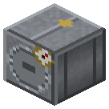

Паровой автоклав
Эпоха 2Пар и механика

стоит

в работе
Под давлением пара: 2 латекса + сера → 4 резины; масло 500 mB + сера → 1 резина (фактис); 3 деревянных полублока + 250 mB креозота → 2 шпалы; 3 нити → 4 стерильных бинта.
Параметры
| Эпоха | 2 — Пар и механика |
|---|---|
| Многоблок | нет |
| Привод | пар |
| Баки, mB | 8000, 4000 |
| что делает | вулканизация, фактис, пропитка шпал, стерилизация |
| энергия на входе | пар |
| из чего | клапан железного бака RC, твёрдая топка RC, железная дверь |
Кто кормит
- IC2:itemHarz ← Химический реактор, Реактор высокого давления
- dustSulfur ← Химический реактор, Реактор высокого давления
- creosote ← Коксовая камера, Пиролизная печь
- steam ← Парогенератор АЭС
Кого кормит
- машины Zavod её продукт не едят
Как устроено (из кода)
Паровой автоклав: работа под давлением пара. Единственное место вулканизации в сборке. вулканизация: 2 латекса + сера + 250 пара -> 4 резины 10 с фактис: 500 растительного масла + сера + 100 пара -> 1 резина 10 с пропитка шпал: 3 деревянных полублока + 250 креозота + 250 пара (Бетелл, 1838) -> 2 шпалы 10 с стерилизация: 3 нити + 250 пара -> 4 стерильных бинта 5 с Слоты: 0 сырьё, 1 сера, 2 выход. Баки: 0 пар, 1 жидкость (креозот, масло).